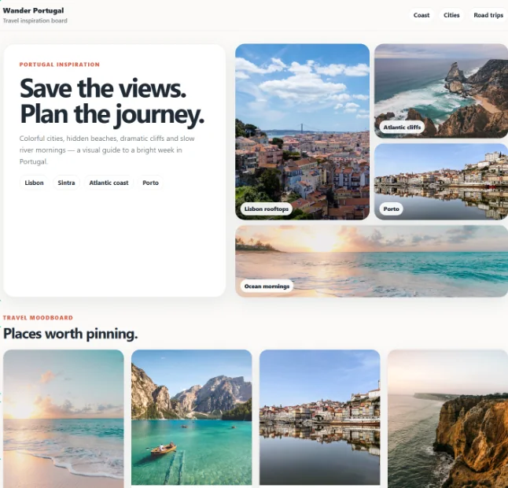
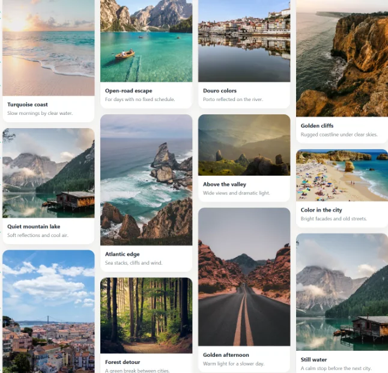
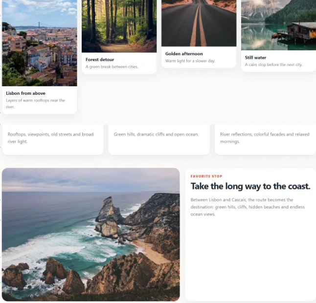
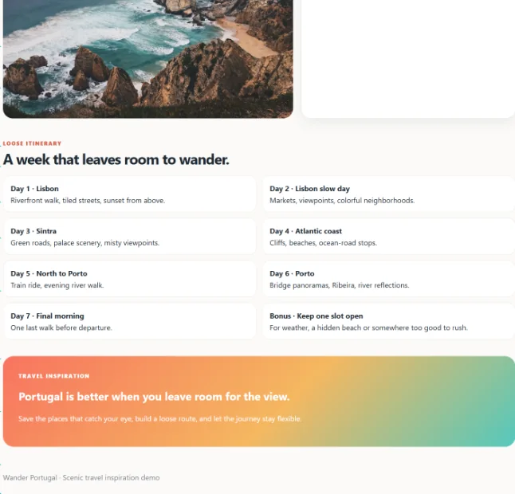
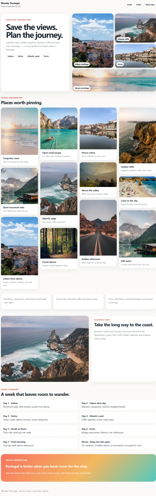

Scrolling screenshots for Windows.
Capture a whole web page, chat, log or document as one continuous image, in any Windows app. Then blur what's private, add your notes and share it.
Free during Public Beta. Formerly called HymmShot.
Four screenshots, or one.
Without a scrolling capture you take several screenshots and hope the other person reads them in order. HymmScroll gives you the whole thing in one image.
Without HymmScroll




With HymmScroll

Works where the scrolling is.
Browser extensions only capture web pages. HymmScroll captures scrollable areas across Windows.
Browsers
Long articles, dashboards, search results and AI answers.
Chats
WhatsApp Desktop, Teams and other conversations, without the sidebar.
Code and IDEs
Long files, diffs and panels in your editor.
Terminal and logs
Command output, console history and diagnostics.
How it works.
Select the area
Start a capture and drag over the part of the window that scrolls.
Scroll through it
Scroll at your own pace. You decide what goes in and where it ends.
Finish and edit
Press Enter or Finish. The editor opens with one continuous image.
Finish the screenshot without opening another app.
Blur and pixelate
Hide names, emails, passwords and IDs before sharing.
Highlight
Mark what matters without covering the content underneath.
Arrows and shapes
Arrows, rectangles, circles, and quick check and cross markers.
Text notes
Add labels and explanations directly on the image.
Crop
Keep exactly the part of the long image you need.
Image or PDF
Save as an image, or export one continuous single-page PDF.
Open existing PNGs
Edit a screenshot you already have with the same tools.
Capture review
See areas that may need attention, and recapture when needed.
Your screenshots stay on your computer.
Screens often show things that shouldn't leave the building: customer data, internal systems, private chats. HymmShot tools are built so that none of it has to.
- Capture and editing happen locallyYour images are created and edited on your own Windows PC.
- No account, no uploadNothing is sent to a cloud service to process your screenshots.
- Hide what shouldn't be sharedBlur names, emails, IDs and passwords before the image leaves your screen.
- Installed from Microsoft StoreAn official, signed install, with updates handled by Windows.
HymmScroll questions and answers
What does HymmScroll do?
HymmScroll captures content that is longer than your screen as one continuous screenshot. You select an area, scroll through it, and HymmScroll joins everything into a single image that you can edit, protect and export.
How do I take a scrolling screenshot on Windows?
Windows' built-in Snipping Tool only captures what's visible on screen. With HymmScroll: start a capture, drag to select the scrollable area, scroll through the content at your own pace, and press Enter or Finish. You get one long image.
Does it work outside the browser?
Yes. HymmScroll works like a regular screenshot: if you can see it on screen, you can capture it. That includes websites, chat apps like WhatsApp Desktop and Teams, IDEs, Terminal and CMD, logs, documents and any other Windows app.
Do I scroll myself, or does it scroll automatically?
You scroll yourself. That keeps you in control: you decide exactly what goes into the capture and where it ends, and it works even in apps where automatic scrolling tends to fail.
Can I hide sensitive information before sharing?
Yes. Use pixelation or blur on names, email addresses, passwords, IDs and any other private details before you save or share the image.
Can I export a long screenshot as a PDF?
Yes. HymmScroll can export the result as one continuous, single-page PDF, or save it as an image.
Can I edit a screenshot I already have?
Yes. Open an existing PNG in HymmScroll and use the same editor: crop, blur, highlight, draw, add arrows, shapes and text, then export.
What if part of a long capture doesn't look right?
HymmScroll can point out areas that may need attention. Move between them with Previous and Next, hide the markers when you're done, or choose Recapture.
Is HymmScroll free?
Yes, HymmScroll is free during its Public Beta. Any future pricing change will be announced clearly in advance.
Is HymmScroll the old HymmShot?
Yes. It's the same app, renamed when HymmShot became the name of the whole family of tools.
Does HymmScroll upload my screenshots?
No. Capturing and editing happen locally on your Windows PC.
Need to join several captures instead?
HymmStack combines captures from different windows or steps into one image.